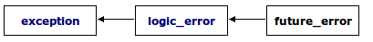

C++11 multithreading programming
Table of Contents
Overview
上一篇浅谈C++ Multithreading Programming主要介绍时下规范好的C++使用 Pthread库和Boost Thread库实现C++多线程编程.这里主要谈谈正在规范的C++11 引入的Thread库和Atomic库,终于自带的C++库能支持高效并可移植的 Multithreading编程.分为2篇,这里先谈谈C++11的Thread的库 (并包含对 C的支持), 后一篇谈谈 C++11的Atomic操作的库.
C++11(之前被成为C++0x)是编程语言C++最新版本的标准.它由 ISO 在2011年8月 12日被批准替代C++03. C++11标准正在规范中,从ISO页面 可以知道如何获得进行中的草稿:
所以本文:
- 标准内容主要参考如上的N3690版本的C++11标准.
- 使用的编译器是GCC4.8,关于GCC4.8支持C+11的情况.
- 源代码之类主要参考cplusplus 和 cppreference.
更多有关C++参考最后的其他资料.
Compile
GCC编译支持C++11,使用编译选项 -std=c++11 或 -std=gnu++11, 前者关闭
GNU扩张支持.并加上 -pthread 选项.
g++ program.o -o program -std=c++11 -pthread
如果漏掉 -phtread 选项,编译能通过,当运行出现如下错误:
terminate called after throwing an instance of 'std::system_error'
what(): Enable multithreading to use std::thread: Operation not permitted
Threads
<thread> 概要
头文件是 <thread>, 分为两部分: thread 类和在namespace
this_thread 用来管理当前thread的函数.具体见之后的Header <thread> synopsis.
thread::id 类
thread::id 类型的对象为每个执行的线程提供唯一的标识,并为所有并不表示线程执行(默认构造的线程对象)的所有线程对象提供一个唯一的值.
thread::id 类没有特别的东西,主要提供方便比较或打印等运算符重载.
namespace std { class thread::id { public: id() noexcept; }; bool operator==(thread::id x, thread::id y) noexcept; bool operator!=(thread::id x, thread::id y) noexcept; bool operator<(thread::id x, thread::id y) noexcept; bool operator<=(thread::id x, thread::id y) noexcept; bool operator>(thread::id x, thread::id y) noexcept; bool operator>=(thread::id x, thread::id y) noexcept; template<class charT, class traits> basic_ostream<charT, traits>& operator<< (basic_ostream<charT, traits>& out, thread::id id); // Hash support template <class T> struct hash; template <typename T> <> struct hash<thread::id>; }
thread 类
namespace std { class thread { public: // types: class id; typedef implementation-defined native_handle_type; // See 30.2.3 // construct/copy/destroy: thread() noexcept; template <class F, class ...Args> explicit thread(F&& f, Args&&... args); ~thread(); thread(const thread&) = delete; thread(thread&&) noexcept; thread& operator=(const thread&) = delete; thread& operator=(thread&&) noexcept; // members: void swap(thread&) noexcept; bool joinable() const noexcept; void join(); void detach(); id get_id() const noexcept; native_handle_type native_handle(); // See 30.2.3 // static members: static unsigned hardware_concurrency() noexcept; }; }
Constructs a thread object
从如上的 thread 类知道, 构造thread对象:
- 默认构造构造一个线程对象,但并不代表任何执行线程.
- 移动构造从其他线程构造一个thread对象,并设置其他线程为默认构造状态.
- 初始化构造创建一个新的thread对象并把它与执行线程相关联.复制/移动所有参数
args..到thread可访问的内存通过如下函数:
template <class T> typename decay<T>::type decay_copy(T&& v) { return std::forward<T>(v); }
求值和复制/移动参数过程丢出的任何exceptions仅在当前线程丢出,不在新线程中.
- 复制构造复制构造被删除.线程不可被复制.
实例:
#include <iostream> // NOLINT #include <utility> #include <thread> #include <functional> using std::cout; using std::endl; void Thread1Fun(int n) { for (int i = 0; i < n; ++i) { cout << "Thread 1 executing" << endl; } } void Thread2Fun(const int& n) { for (int i = 0; i < n; ++i) { std::cout << "Thread 2 executing\n"; } } int main() { const int kLoops = 5; std::thread t1; // t1 is not a thread std::thread t2(Thread1Fun, kLoops + 1); // pass by value std::thread t3(Thread2Fun, std::ref(kLoops)); // pass by reference std::thread t4(std::move(t3)); // t4 is now running f2(). t3 is no longer a thread t2.join(); t4.join(); return 0; }
joinable
用来检查一个线程对象是否是正在执行的线程.若是,返回 true. 所以默认构造thread对象是不可joinable.
实例:
#include <iostream> // NOLINT #include <thread> #include <chrono> using std::cout; using std::endl; void ThreadFun() { std::this_thread::sleep_for(std::chrono::seconds(1)); } int main() { std::thread t; cout << "default construct, joinable: " << t.joinable() << endl; t = std::thread(ThreadFun); cout << "initial construct, joinable: " << t.joinable() << endl; t.join(); return 0; }
结果:
default construct, joinable: 0 initial construct, joinable: 1
get_id
返回thread对象的 std::thread::id 值.
实例:
#include <iostream> // NOLINT #include <thread> #include <chrono> using std::cout; using std::endl; void ThreadFun() { std::this_thread::sleep_for(std::chrono::seconds(1)); } int main() { std::thread t1(ThreadFun); std::thread::id id_t1 = t1.get_id(); cout << "thread1's id: " << id_t1 << endl; t1.join(); return 0; }
native_handle
这个函数是implementation-defined. 它允许提供底层实现细节的访问.但实际使用它是non-portable.
实例: 使用 native_handle 打开在POSIX系统上C++线程的实时调度.
#include <pthread.h> #include <thread> #include <mutex> #include <iostream> // NOLINT #include <chrono> #include <cstring> using std::cout; using std::endl; std::mutex iomutex; void ThreadFun(int thread_id) { std::this_thread::sleep_for(std::chrono::seconds(1)); sched_param sch; int policy; pthread_getschedparam(pthread_self(), &policy, &sch); std::lock_guard<std::mutex> lk(iomutex); cout << "Thread " << thread_id << " is executing at priority " << sch.sched_priority << endl; } int main() { std::thread t1(ThreadFun, 1), t2(ThreadFun, 2); sched_param sch; int policy; pthread_getschedparam(t1.native_handle(), &policy, &sch); sch.sched_priority = 20; if (pthread_setschedparam(t1.native_handle(), SCHED_FIFO, &sch)) { cout << "Failed to setschedparam: " << std::strerror(errno) << endl; } t1.join(); t2.join(); return 0; }
暂时GCC4.8不支持,结果:
Failed to setschedparam: Operation not permitted Thread 1 is executing at priority 0 Thread 2 is executing at priority 0
hardware_concurrency (static)
返回硬件支持的thread数.这个值仅作为参考.如果这个值不可计算或没有很多的定义,那么实现返回0.
#include <iostream> // NOLINT #include <thread> int main() { unsigned int num = std::thread::hardware_concurrency(); std::cout << num << " concurrent threads are supported." << std::endl; }
swap
swap 操作用来交换2个线程对象的底层句柄.有2种可选,thread类的成员函数和在std下的全局函数.
实例:
#include <iostream> // NOLINT #include <thread> #include <chrono> void Thread1Fun() { std::this_thread::sleep_for(std::chrono::seconds(1)); } void Thread2Fun() { std::this_thread::sleep_for(std::chrono::seconds(1)); } int main() { std::thread t1(Thread1Fun); std::thread t2(Thread2Fun); std::cout << "thread 1 id: " << t1.get_id() << std::endl; std::cout << "thread 2 id: " << t2.get_id() << std::endl; std::swap(t1, t2); std::cout << "after std::swap(t1, t2):" << std::endl; std::cout << "thread 1 id: " << t1.get_id() << std::endl; std::cout << "thread 2 id: " << t2.get_id() << std::endl; t1.swap(t2); std::cout << "after t1.swap(t2):" << std::endl; std::cout << "thread 1 id: " << t1.get_id() << std::endl; std::cout << "thread 2 id: " << t2.get_id() << std::endl; t1.join(); t2.join(); return 0; }
管理当前thread的函数
在thread的头文件中,加了一个新的namespace this_thread 用来包含一些管理操作当前thread的一些函数.
void yield();
重新调度线程的执行,让其他线程运行.具体行为依赖于实现,与OS的调度机制有关.
std::thread::id get_id();
返回当前线程的 thread::id 类型的对象.
template< class Rep, class Period > void sleep_for( const std::chrono::duration<Rep, Period>& sleep_duration );
阻塞当前线程的执行至少相对时间 sleep_duration.
template< class Clock, class Duration > void sleep_until( const std::chrono::time_point<Clock,Duration>& sleep_time );
阻塞当前线程的执行直到绝对时间 sleep_time 到达.
实例:
#include <iostream> // NOLINT #include <thread> #include <chrono> #include <mutex> #include <atomic> #include <ctime> using std::cout; using std::endl; using std::chrono::system_clock; std::atomic<bool> ready(false); void Thread1Fun() { while (!ready) { std::this_thread::yield(); } std::thread::id id = std::this_thread::get_id(); cout << "thread " << id << "go to sleep" << endl; std::this_thread::sleep_for(std::chrono::seconds(1)); } void Thread2Fun() { std::thread::id id = std::this_thread::get_id(); cout << "thread " << id << "is running" << endl; ready = true; std::time_t tt = system_clock::to_time_t(system_clock::now()); struct std::tm *ptm = std::localtime(&tt); ptm->tm_sec += 2; std::this_thread::sleep_until(system_clock::from_time_t(mktime(ptm))); } int main() { std::thread t1(Thread1Fun); std::thread t2(Thread2Fun); t1.join(); t2.join(); return 0; }
Mutual exclusion
<mutex> 概要
头文件 <mutex> 分为: mutexes,locks和一些特殊函数.
具体见之后的Header <mutex> synopsis.
- Mutexes 是lockable types,用来对关键区域代码访问保护:
mutex,recursive_mutex,timed_mutex,recursive_timed_mutex. - Locks 是用来管理mutex的对象,并对mutex的lifetime自我管理:
lock_guard,unique_lock. - Functions 可以同时锁多个mutexes(
try_lock,lock),并使某个函数只被调用一次(call_once).
Lockable types

- BasicLockable
BasicLockable 概念描述了最少特性类型,也就是满足(若m是BasicLockable类型 ):
m.lock()m.unlock()
所以所有mutex都满足BasicLockable类型:
mutex,recursive_mutex,timed_mutex,recursive_timed_mutex,unique_lock. - Lockable
Lockable 概念扩展了 BasicLockable 概念,并支持
try_lock.所以这些mutex满足Lockable类型:
mutex,recursive_mutex,timed_mutex,recursive_timed_mutex. - TimedLockable
TimedLockable 概念扩展了 Lockable 概念,并支持
try_lock_for和try_lock_until.所以这些mutex满足TimedLockable类型:
timed_mutex,recursive_timed_mutex.
mutex 类
mutex 类提供了一个不可递归的排它锁.基本接口可以从如下类中参考.
namespace std { class mutex { public: constexpr mutex() noexcept; ~mutex(); mutex(const mutex&) = delete; mutex& operator=(const mutex&) = delete; void lock(); bool try_lock(); void unlock(); typedef implementation-defined native_handle_type; // See 30.2.3 native_handle_type native_handle(); // See 30.2.3 }; }
实例:
#include <iostream> // NOLINT #include <vector> #include <thread> #include <mutex> using std::cout; using std::endl; using std::vector; int g_value = 0; std::mutex count_mutex; void Increase() { const int kLoops = 100; for (int i = 0; i < kLoops; ++i) { count_mutex.lock(); g_value++; count_mutex.unlock(); } } int main(int argc, char *argv[]) { const int kNumThreads = 5; vector<std::thread> threads; for (int i = 0; i < kNumThreads; ++i) { threads.push_back(std::thread(Increase)); } for (auto &thread : threads) { thread.join(); } cout << "value = " << g_value << endl; return 0; }
recursive_mutex 类
namespace std { class recursive_mutex { public: recursive_mutex(); ~recursive_mutex(); recursive_mutex(const recursive_mutex&) = delete; recursive_mutex& operator=(const recursive_mutex&) = delete; void lock(); bool try_lock() noexcept; void unlock(); typedef implementation-defined native_handle_type; // See 30.2.3 native_handle_type native_handle(); // See 30.2.3 }; }
timed_mutex 类
namespace std { class timed_mutex { public: timed_mutex(); ~timed_mutex(); timed_mutex(const timed_mutex&) = delete; timed_mutex& operator=(const timed_mutex&) = delete; void lock(); bool try_lock(); template <class Rep, class Period> bool try_lock_for(const chrono::duration<Rep, Period>& rel_time); template <class Clock, class Duration> bool try_lock_until(const chrono::time_point<Clock, Duration>& abs_time); void unlock(); typedef implementation-defined native_handle_type; // See 30.2.3 native_handle_type native_handle(); // See 30.2.3 }; }
recursive_timed_mutex 类
namespace std { class recursive_timed_mutex { public: recursive_timed_mutex(); ~recursive_timed_mutex(); recursive_timed_mutex(const recursive_timed_mutex&) = delete; recursive_timed_mutex& operator=(const recursive_timed_mutex&) = delete; void lock(); bool try_lock() noexcept; template <class Rep, class Period> bool try_lock_for(const chrono::duration<Rep, Period>& rel_time); template <class Clock, class Duration> bool try_lock_until(const chrono::time_point<Clock, Duration>& abs_time); void unlock(); typedef implementation-defined native_handle_type; // See 30.2.3 native_handle_type native_handle(); // See 30.2.3 }; }
Mutex Exception safety
基本保证: 当exception被以上 mutex 的成员函数抛出时,这些mutex对象保持有效状态. 如果是 lock 操作被exception, lock不会被抛出exception的线程所拥有.
抛出的是一个 system_error exception, 导致的基本情况是:
| exception 类型 | error情况 | 描述 |
|---|---|---|
system_error |
errc::resource_deadlock_would_occur |
deadlock被检测到 |
system_error |
errc::operation_not_permitted |
线程没有权利做这个操作 |
system_error |
errc::device_or_resource_busy |
native handle已经被锁 |
lock_guard 类
之前的mutex必须写明lock和unlock调用,如果在lock和unlock之间产生 exception,那么必须在exception处理中不能忘记处理unlock.当只是在一个关键区域内需要mutex保护,使用这样的mutex既不方便也容易忘记unlock而造成死锁.
引入对之前的mutex的封装后的 lock_guard 和 unique_lock ,提供易用性的 RAII-style 机制来获取锁在一段区域内.
lock guard 是一个用来管理一个 mutex 对象,并保持锁住它的对象.
在构造时,mutex 对象被调用的线程锁住,然后在析构时,mutex 被解锁.它是最简单的lock,并且作为自动作用范围直到它的作用区域结束时特别有用.通过这种方法,它保证 mutex 对象得到解锁即使在exception被抛出时.
namespace std { template <class Mutex> class lock_guard { public: typedef Mutex mutex_type; explicit lock_guard(mutex_type& m); lock_guard(mutex_type& m, adopt_lock_t); ~lock_guard(); lock_guard(lock_guard const&) = delete; lock_guard& operator=(lock_guard const&) = delete; private: mutex_type& pm; // exposition only }; }
实例:
#include <iostream> // NOLINT #include <thread> #include <mutex> #include <stdexcept> std::mutex mtx; void PrintEven(int x) { if (x % 2 == 0) { std::cout << x << " is even\n"; } else { throw(std::logic_error("not even")); } } void PrintThreadEvenId(int id) { try { std::lock_guard<std::mutex> lck(mtx); PrintEven(id); } catch (std::logic_error&) { std::cout << "[exception caught]" << std::endl; } } int main() { std::thread threads[10]; for (int i = 0; i < 10; ++i) { threads[i] = std::thread(PrintThreadEvenId, i+1); } for (auto& th : threads) { th.join(); } return 0; }
unique_lock 类
unique_lock 与上面的 lock_guard 基本差不多,同样是 RAII-style 机制来获取锁在一段区域内的对象.
但 lock_guard 非常简单,只提供构造自动拥有锁和析构释放锁,如果需要一些其他的操作,那么就需要更复杂和接口更多的类来处理, lock_guard 能满足如此要求. 它类基本接口如下.
- class
namespace std { template <class Mutex> class unique_lock { public: typedef Mutex mutex_type; // 30.4.2.2.1, construct/copy/destroy: unique_lock() noexcept; explicit unique_lock(mutex_type& m); unique_lock(mutex_type& m, defer_lock_t) noexcept; unique_lock(mutex_type& m, try_to_lock_t); unique_lock(mutex_type& m, adopt_lock_t); template <class Clock, class Duration> unique_lock(mutex_type& m, const chrono::time_point<Clock, Duration>& abs_time); template <class Rep, class Period> unique_lock(mutex_type& m, const chrono::duration<Rep, Period>& rel_time); ~unique_lock(); unique_lock(unique_lock const&) = delete; unique_lock& operator=(unique_lock const&) = delete; unique_lock(unique_lock&& u) noexcept; unique_lock& operator=(unique_lock&& u) noexcept; // 30.4.2.2.2, locking: void lock(); bool try_lock(); template <class Rep, class Period> bool try_lock_for(const chrono::duration<Rep, Period>& rel_time); template <class Clock, class Duration> bool try_lock_until(const chrono::time_point<Clock, Duration>& abs_time); void unlock(); // 30.4.2.2.3, modifiers: void swap(unique_lock& u) noexcept; mutex_type *release() noexcept; // 30.4.2.2.4, observers: bool owns_lock() const noexcept; explicit operator bool () const noexcept; mutex_type* mutex() const noexcept; private: mutex_type *pm; // exposition only bool owns; // exposition only }; template <class Mutex> void swap(unique_lock<Mutex>& x, unique_lock<Mutex>& y) noexcept; }
- Constructor
在mutex header概要中可以看到有不同的构造函数,其中一类
unique_lock构造传入不同的类型:defer_lock: 不去获取mutex,只有要和mutex一样,手动去lock它.try_to_lock: 相当于在构造时,调用try_lock, 不阻塞,之后可通过成员函数=bool ownslock()= 或直接操作符explicit operator bool() const判断是否获取锁成功.adopt_lock_t: 认为调用的线程已经占有这个锁m.已经占有这个锁了,为什么要去创建一个unique_lock去包含它呢? 因为可以利用unique_lock中途接手管理这个锁m, 比如想用 RAII-style 机制管理它,使它exception safe等.
这些类型在源代码定义基本如下:
struct defer_lock_t { }; struct try_to_lock_t { }; struct adopt_lock_t { }; constexpr std::defer_lock_t defer_lock = std::defer_lock_t(); constexpr std::try_to_lock_t try_to_lock = std::try_to_lock_t(); constexpr std::adopt_lock_t adopt_lock = std::adopt_lock_t();
余下的构造:
unique_lock();:仅仅创建一个nique_lock对象,不和任何mutex相关联.nique_lock(unique_lock&& other);: 通过other的内容来构造nique_lock对像,使得other不和任何mutex相关连联.explicit unique_lock(mutex_type& m);: 通过m.lock()来构造与m相关联的unique_lock对象.unique_lock(mutex_type& m, const std::chrono::duration<Rep,Period>& timeout_duration);: 通过m.try_lock_for(timeout_duration)来构造与m相关联的unique_lock对象.unique_lock( mutex_type& m, const std::chrono::time_point<Clock,Duration>& timeout_time);: 通过m.try_lock_until(timeout_time)来构造与m相关联的unique_lock对象.
- 实例
利用
defer_lock, 不去获取 mutex, 只创建与它相关联的unique_lock对象,之后用lock()同时去获取两个锁,防止死锁.#include <iostream> // NOLINT #include <mutex> #include <thread> #include <chrono> using std::cout; using std::endl; struct Box { explicit Box(int num) : num_things{num} {} int num_things; std::mutex m; }; void Transfer(Box *from, Box *to, int num) { // don't actually take the locks yet std::unique_lock<std::mutex> lock1(from->m, std::defer_lock); std::unique_lock<std::mutex> lock2(to->m, std::defer_lock); // lock both unique_locks without deadlock std::lock(lock1, lock2); from->num_things -= num; to->num_things += num; // 'from.m' and 'to.m' mutexes unlocked in 'unique_lock' dtors } int main() { Box acc1(100); Box acc2(50); cout << "acc1 num = " << acc1.num_things << " ,acc2 num = " << acc2.num_things << endl; std::thread t1(Transfer, &acc1, &acc2, 10); std::thread t2(Transfer, &acc2, &acc1, 5); t1.join(); t2.join(); cout << "after transfer: " << "acc1 num = " << acc1.num_things << " ,acc2 num = " << acc2.num_things << endl; return 0; }
lock_guard VS unique_lock
lock_guard 和 unique_lock 很大程序上很相似,都是 RAII-style 机制来封装一个mutex的锁, lock_guard 可以说是 unique_lock 更严格并拥有限制的接口的版本.
如何合适的选择两者的使用呢? 如果 lock_guard 对于情况A足够,那么就使用它. 不仅仅是从效率(efficiency)考虑,更是从想要表达的功能(functionality)
考虑. 使用 lock_guard 不仅避免了不需要的其他接口的开销,更是对读代码者表达它的意图,你将永远都不需要解锁这个guard.
所以你先考虑使用 lock_guard, 除非你需要 unique_lock 的功能. 比如
condition_variable 就需要传入一个 unique_lock 对象.
try_lock 和 lock
template< class Lockable1, class Lockable2, class LockableN... > int try_lock(Lockable1& lock1, Lockable2& lock2, LockableN& lockn... );
按对象lock1, lock2, …, lockn 从头到尾的顺序尝试去获取每个锁. 如果某个 try_lock 失败, unlock 所有对象并返回. 返回值:
- 成功: -1.
- 失败: 以0为起始点的获取锁失败的对象次序数(0对于lock1, 1对于lock2, ..).
template< class Lockable1, class Lockable2, class LockableN... > void lock( Lockable1& lock1, Lockable2& lock2, LockableN& lockn... );
占有传入的锁lock1, lock2, …, lockn,使用 防止死锁算饭 来防止死锁.
对于传入对象按照不特定的顺序调用它们的成员函数 lock , try_lock,
unlock ,确保最后所有的锁被获取成功在函数返回时.
call_once
class once_flag; template< class Callable, class... Args > void call_once( std::once_flag& flag, Callable&& f, Args&&... args );
为了让一段代码只被多个线程只执行一次, mutex 文件中中包含了这个保证只调用一次的接口.
once_flag 对象是辅助 call_once 的,作为多个线程共同执行这段的标识,
所以这些个线程必须传入同一个 once_flag 对象.
它并对 exception 做一定的处理,如果 call_once 执行的函数以exception
退出,那么exception会抛给调用者.这次已exception退出的执行并不算一次,之后其他函数仍可以继续调用它一次.
如下的实例, t1 和 t2线程抛出exception, t3仍然运行一次, t4无论是怎样,都得不到运行.
#include <iostream> // NOLINT #include <thread> #include <mutex> using std::cout; using std::endl; std::once_flag flag; inline void MayThrowFunction(bool do_throw) { // only one instance of this function can be run simultaneously if (do_throw) { cout << "throw" << endl; // this message may be printed from 0 to 3 times // if function exits via exception, another function selected throw std::exception(); } cout << "once" << endl; // printed exactly once, it's guaranteed that // there are no messages after it } inline void DoOnce(bool do_throw) { try { std::call_once(flag, MayThrowFunction, do_throw); } catch (...) { } } int main() { std::thread t1(DoOnce, true); std::thread t2(DoOnce, true); std::thread t3(DoOnce, false); std::thread t4(DoOnce, true); t1.join(); t2.join(); t3.join(); t4.join(); return 0; }
Condition variables
<condition_variable> 概要
<condition_variable> 头文件主要包含两个 condition_variable 类, 一个全局函数.
namespace std { class condition_variable; class condition_variable_any; void notify_all_at_thread_exit(condition_variable& cond, unique_lock<mutex> lk); enum class cv_status { no_timeout, timeout }; }
cv_statusCondition variables与mutex之类在等待timeout时,返回的不一样,mutex之类放回
bool类型, 而Condition variables特意为它定义了enum类型:no_timeout和timeout, 来判断等待是否成功.enum class cv_status { no_timeout, timeout };
cv_status::no_timeoutThe function returned without a timeout (i.e., it was notified).cv_status::timeoutThe function returned because it reached its time limit (timeout).
notify_all_at_thread_exitvoid notify_all_at_thread_exit(std::condition_variable& cond, std::unique_lock<std::mutex> lk);
<condition_variable>头文件中有这个函数,它提供机制notify其他线程在调用这个函数的线程退出时. 它相当于操作(并包括清理所有thread_local对象):lk.unlock(); cond.notify_all();
虽然可以在调用线程的最后同样调用如上两句代码,但意图没有表现出来,表明 cond的notify必须在线程退出时调用,后面维护者可能会在这之后继续添加代码.
notify_all_at_thread_exit用一句调用替代两个调用,既不用在函数最后去调用它,而且表明它的意图.它的操作流程如下:
- 之前获取的锁lk的拥有权被转移到cond的内部.
- 当此线程退出时, cond被notified通过:
lk.unlock(); cond.notify_all();
Notes
- 如果
lk.mutex()没有被当前线程锁住,调用此函数导致undefined behavior. - 如果
lk.mutex()的 mutex 不是其他线程使用来等待 condition variable 的同一个的话, 调用此函数导致undefined behavior.
condition_variable 类
namespace std { class condition_variable { public: condition_variable(); ~condition_variable(); condition_variable(const condition_variable&) = delete; condition_variable& operator=(const condition_variable&) = delete; void notify_one() noexcept; void notify_all() noexcept; void wait(unique_lock<mutex>& lock); template <class Predicate> void wait(unique_lock<mutex>& lock, Predicate pred); template <class Clock, class Duration> cv_status wait_until(unique_lock<mutex>& lock, const chrono::time_point<Clock, Duration>& abs_time); template <class Clock, class Duration, class Predicate> bool wait_until(unique_lock<mutex>& lock, const chrono::time_point<Clock, Duration>& abs_time, Predicate pred); template <class Rep, class Period> cv_status wait_for(unique_lock<mutex>& lock, const chrono::duration<Rep, Period>& rel_time); template <class Rep, class Period, class Predicate> bool wait_for(unique_lock<mutex>& lock, const chrono::duration<Rep, Period>& rel_time, Predicate pred); typedef implementation-defined native_handle_type; // See 30.2.3 native_handle_type native_handle(); // See 30.2.3 }; }
Condition Variable的基本概念可以从之前篇浅谈C++ Multithreading Programming中获取.
condition_variable 类的 void wait(unique_lock<mutex>& lock,
Predicate pred); 接口:
- 需要传入
unique_lock. pred函数, 如果predicate返回false,等待. 相当于:
while (!pred()) {
wait(lock);
}
实例:
#include <iostream> // NOLINT #include <string> #include <thread> #include <mutex> #include <condition_variable> using std::string; using std::cout; using std::endl; std::mutex m; std::condition_variable cv; string data; bool g_ready = false; bool g_processed = false; void WorkerThread() { // Wait until main() sends data std::unique_lock<std::mutex> lk(m); cv.wait(lk, []{return g_ready;}); // after the wait, we own the lock. cout << "Worker thread is processing data" << endl; data += " after processing"; // Send data back to main() g_processed = true; cout << "Worker thread signals data processing completed" << endl; // Manual unlocking is done before notifying, to avoid // that the waiting thread gets blocked again. lk.unlock(); cv.notify_one(); } int main() { std::thread worker(WorkerThread); data = "Example data"; // send data to the worker thread { std::lock_guard<std::mutex> lk(m); g_ready = true; cout << "main() signals data ready for processing" << endl; } cv.notify_one(); // wait for the worker { std::unique_lock<std::mutex> lk(m); cv.wait(lk, []{return g_processed;}); } cout << "Back in main(), data = " << data << '\n'; worker.join(); return 0; }
condition_variable_any 类
namespace std { class condition_variable_any { public: condition_variable_any(); ~condition_variable_any(); condition_variable_any(const condition_variable_any&) = delete; condition_variable_any& operator=(const condition_variable_any&) = delete; void notify_one() noexcept; void notify_all() noexcept; template <class Lock> void wait(Lock& lock); template <class Lock, class Predicate> void wait(Lock& lock, Predicate pred); template <class Lock, class Clock, class Duration> cv_status wait_until(Lock& lock, const chrono::time_point<Clock, Duration>& abs_time); template <class Lock, class Clock, class Duration, class Predicate> bool wait_until(Lock& lock, const chrono::time_point<Clock, Duration>& abs_time, Predicate pred); template <class Lock, class Rep, class Period> cv_status wait_for(Lock& lock, const chrono::duration<Rep, Period>& rel_time); template <class Lock, class Rep, class Period, class Predicate> bool wait_for(Lock& lock, const chrono::duration<Rep, Period>& rel_time, Predicate pred); }; }
condition_variable_any 是 condition_variable 的一个通用版,它可以等待任何满足 BasicLockable 要求Lock类型的对象.其他与 condition_variable
一样.
实例:
#include <iostream> // NOLINT #include <condition_variable> #include <thread> #include <chrono> #include <vector> using std::cout; using std::endl; std::condition_variable_any cv; std::mutex cv_m; // This mutex is used for three purposes: // 1) to synchronize accesses to i // 2) to synchronize accesses to std::cout // 3) for the condition variable cv int g_wait_val = 0; void WaitVal(int id) { std::unique_lock<std::mutex> lk(cv_m); cout << "thread " << id << " Waiting... " << endl; cv.wait(lk, []{return g_wait_val == 1;}); cout << "...finished waiting," << "thread " << id << endl; } void Signals() { std::this_thread::sleep_for(std::chrono::seconds(1)); { std::lock_guard<std::mutex> lk(cv_m); cout << "Notifying..." << endl; } cv.notify_all(); std::this_thread::sleep_for(std::chrono::seconds(1)); { std::lock_guard<std::mutex> lk(cv_m); g_wait_val = 1; cout << "Notifying again..." << endl; } cv.notify_all(); } int main() { std::vector<std::thread> threads; for (int i = 0; i < 3; ++i) { threads.emplace_back(WaitVal, i); } threads.emplace_back(Signals); for (auto& t : threads) { t.join(); } return 0; }
condition_variable VS condition_variable_any
引自N3690 §30.5[thread.condition]:
Class condition_variable provides a condition variable that can only
wait on an object of type unique_lock<mutex> , allowing maximum
efficiency on some platforms. Class condition_variable_any provides a
general condition variable that can wait on objects of user-supplied
lock types.
condition_variable 只与 unique_lock<mutex> 类型对象关联,在某些平台上,它可以更好的得到特定的优化,如果不需要
condition_variable_any 的灵活性, 选更高效的 condition_variable 对象使用.
Future
<future> 概要
如果要异步的获取一个函数的运行结果, 可以创建一个线程,并利用Condition
varialbes 来同步线程间使得另外线程正确获取到这个结果. 但C++11的
future 库使得这一过程更方便, 它提供接口使程序在一个线程中获取一个在同一个或其他线程中运行的函数的结果(值或异常), (这些类使用并不限制在
multi-threaded 程序中,同样可以在 single-threaded 使用.
future的概要主要分为:
- 运行函数提供共享结果的Providers类:
promise和packaged_task. - 获取共享结果的Futures类:
future和shared_future. - Error handling:
future_error,future_errc等. - Providers提供函数:
async.
Error handling
future_error类
future_error类定义对future对象非法操作抛出异常的对象类型. 也就是专门为future库中接口出现异常提供特定的异常类.从上图类图可知,这个类继承自
logic_error, 并添加获取error_code的成员函数code, 获取exception信息的what成员函数.namespace std { class future_error : public logic_error { public: future_error(error_code ec); // exposition only const error_code& code() const noexcept; const char* what() const noexcept; }; } const error_code& code() const noexcept;
实例:
#include <future> #include <iostream> // NOLINT int main() { std::future<int> empty; try { int n = empty.get(); } catch (const std::future_error& e) { std::cout << "Caught a future_error with code \"" << e.code() << "\"\nMessage: \"" << e.what() << "\"\n"; } }
- futureerrc
- futurestatus
template promise 类
namespace std { template <class R> class promise { public: promise(); template <class Allocator> promise(allocator_arg_t, const Allocator& a); promise(promise&& rhs) noexcept; promise(const promise& rhs) = delete; ~promise(); // assignment promise& operator=(promise&& rhs) noexcept; promise& operator=(const promise& rhs) = delete; void swap(promise& other) noexcept; // retrieving the result future<R> get_future(); // setting the result void set_value(see below ); void set_exception(exception_ptr p); // setting the result with deferred notification void set_value_at_thread_exit(const R& r); void set_value_at_thread_exit(see below ); void set_exception_at_thread_exit(exception_ptr p); }; template <class R> void swap(promise<R>& x, promise<R>& y) noexcept; template <class R, class Alloc> struct uses_allocator<promise<R>, Alloc>; }
template packaged_task 函数
namespace std { template<class> class packaged_task; // undefined template<class R, class... ArgTypes> class packaged_task<R(ArgTypes...)> { public: // construction and destruction packaged_task() noexcept; template <class F> explicit packaged_task(F&& f); template <class F, class Allocator> explicit packaged_task(allocator_arg_t, const Allocator& a, F&& f); ~packaged_task(); // no copy packaged_task(const packaged_task&) = delete; packaged_task& operator=(const packaged_task&) = delete; // move support packaged_task(packaged_task&& rhs) noexcept; packaged_task& operator=(packaged_task&& rhs) noexcept; void swap(packaged_task& other) noexcept; bool valid() const noexcept; // result retrieval future<R> get_future(); // execution void operator()(ArgTypes... ); void make_ready_at_thread_exit(ArgTypes...); void reset(); }; template <class R, class... ArgTypes> void swap(packaged_task<R(ArgTypes...)>& x, packaged_task<R(ArgTypes...)>& y) noexcept; template <class R, class Alloc> struct uses_allocator<packaged_task<R>, Alloc>; }
template future 类
namespace std { template <class R> class future { public: future() noexcept; future(future &&) noexcept; future(const future& rhs) = delete; ~future(); future& operator=(const future& rhs) = delete; future& operator=(future&&) noexcept; shared_future<R> share(); // retrieving the value see below get(); // functions to check state bool valid() const noexcept; void wait() const; template <class Rep, class Period> future_status wait_for(const chrono::duration<Rep, Period>& rel_time) const; template <class Clock, class Duration> future_status wait_until(const chrono::time_point<Clock, Duration>& abs_time) const; }; }
template shared_future 类
namespace std { template <class R> class shared_future { public: shared_future() noexcept; shared_future(const shared_future& rhs); shared_future(future<R>&&) noexcept; shared_future(shared_future&& rhs) noexcept; ~shared_future(); shared_future& operator=(const shared_future& rhs); shared_future& operator=(shared_future&& rhs) noexcept; // retrieving the value see below get() const; // functions to check state bool valid() const noexcept; void wait() const; template <class Rep, class Period> future_status wait_for(const chrono::duration<Rep, Period>& rel_time) const; template <class Clock, class Duration> future_status wait_until(const chrono::time_point<Clock, Duration>& abs_time) const; }; }
template async 函数
- Launching policy for async
- async
template <class F, class... Args> future<typename result_of<typename decay<F>::type(typename decay<Args>::type...)>::type> async(F&& f, Args&&... args); template <class F, class... Args> future<typename result_of<typename decay<F>::type(typename decay<Args>::type...)>::type> async(launch policy, F&& f, Args&&... args);
Header synopsis
<thread>
基本概要如下(§30.3 [thread.threads] of N3690):
// Header <thread> synopsis namespace std { class thread; void swap(thread& x, thread& y) noexcept; namespace this_thread { thread::id get_id() noexcept; void yield() noexcept; template <class Clock, class Duration> void sleep_until(const chrono::time_point<Clock, Duration>& abs_time); template <class Rep, class Period> void sleep_for(const chrono::duration<Rep, Period>& rel_time); } }
<mutex>
// Header <mutex> synopsis namespace std { class mutex; class recursive_mutex; class timed_mutex; class recursive_timed_mutex; struct defer_lock_t { }; struct try_to_lock_t { }; struct adopt_lock_t { }; constexpr defer_lock_t defer_lock { }; constexpr try_to_lock_t try_to_lock { }; constexpr adopt_lock_t adopt_lock { }; template <class Mutex> class lock_guard; template <class Mutex> class unique_lock; template <class Mutex> void swap(unique_lock<Mutex>& x, unique_lock<Mutex>& y) noexcept; template <class L1, class L2, class... L3> int try_lock(L1&, L2&, L3&...); template <class L1, class L2, class... L3> void lock(L1&, L2&, L3&...); struct once_flag { constexpr once_flag() noexcept; once_flag(const once_flag&) = delete; once_flag& operator=(const once_flag&) = delete; }; template<class Callable, class ...Args> void call_once(once_flag& flag, Callable func, Args&&... args); }
<future>
namespace std { enum class future_errc { broken_promise = implementation-defined , future_already_retrieved = implementation-defined , promise_already_satisfied = implementation-defined , no_state = implementation-defined }; enum class launch : unspecified { async = unspecified , deferred = unspecified , implementation-defined }; enum class future_status { ready, timeout, deferred }; template <> struct is_error_code_enum<future_errc> : public true_type { }; error_code make_error_code(future_errc e) noexcept; error_condition make_error_condition(future_errc e) noexcept; const error_category& future_category() noexcept; class future_error; template <class R> class promise; template <class R> class promise<R&>; template <> class promise<void>; template <class R> void swap(promise<R>& x, promise<R>& y) noexcept; template <class R, class Alloc> struct uses_allocator<promise<R>, Alloc>; template <class R> class future; template <class R> class future<R&>; template <> class future<void>; template <class R> class shared_future; template <class R> class shared_future<R&>; template <> class shared_future<void>; template <class> class packaged_task; // undefined template <class R, class... ArgTypes> class packaged_task<R(ArgTypes...)>; template <class R> void swap(packaged_task<R(ArgTypes...)>&, packaged_task<R(ArgTypes...)>&) noexcept; template <class R, class Alloc> struct uses_allocator<packaged_task<R>, Alloc>; template <class F, class... Args> future<typename result_of<typename decay<F>::type(typename decay<Args>::type...)>::type> async(F&& f, Args&&... args); template <class F, class... Args> future<typename result_of<typename decay<F>::type(typename decay<Args>::type...)>::type> async(launch policy, F&& f, Args&&... args); }
其他资料
Books
- Scott Meyers的 Overview of the New C++ (C++11/14)
Online resources
- Scott Meyers的Summary of C++11 Feature Availability in gcc and MSVC
- C++11 on cppreference
- C++11 on cplusplus
- Bjarne Stroustrup的C++11 FAQ
- C++11 Wiki
- C++ standards drafts on GitHub
- C documentation for Thread support library
cc
实例: